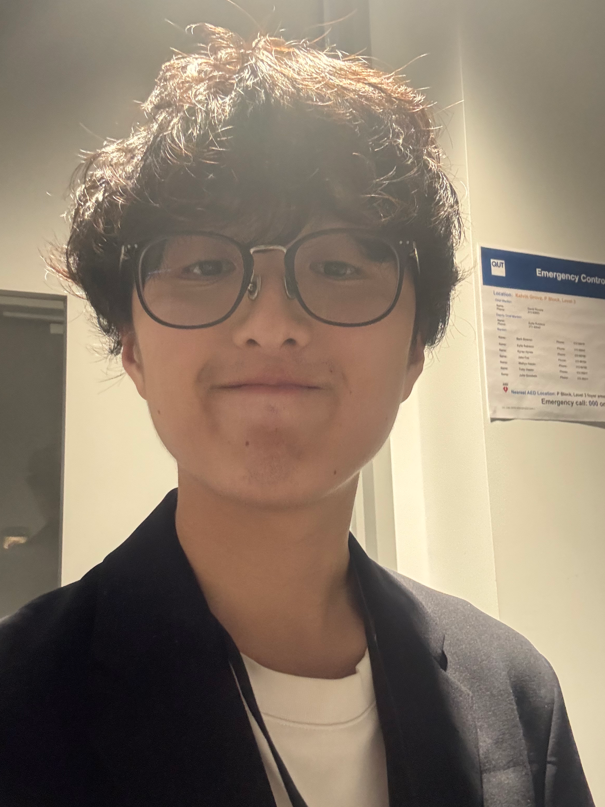

Produce
Concept development, production planning, project direction, collaboration, briefs and deadline-driven delivery.
Brisbane, Australia
Screen / Edit / Produce
Selected work 2024—2026
Screen Content Producer / Video Editor
I create screen content across commercial, documentary, social and interactive formats—bringing ideas from first frame to final delivery.
View selected work01 / Profile
I work where story, rhythm and production reality meet.
YH / 26

Creative Statement
I bring stories to life through filming and editing, shaping images, sound and rhythm around the people I want to reach. Across commercial, documentary, social and 3D projects, I connect creative ideas with collaborative production and purposeful post-production.
I'm a Brisbane-based screen content producer and video editor studying a Bachelor of Creative Industries at QUT, majoring in Screen Content Production with a minor in Interaction Design.
Born in Sydney and raised in Japan, I work across English- and Japanese-language contexts. My experience includes production and editing at General Practice, social and educational video editing for Gayakazoku, and direction and promotional content for the ongoing exhibition project The Last Flight.
With a particular interest in post-production, I aim to contribute to collaborative screen projects and, ultimately, large-scale film productions.
02 / Selected work
A focused selection spanning client work, social editing, exhibition production, factual screen and 3D production.
03 / Capabilities
Concept development, production planning, project direction, collaboration, briefs and deadline-driven delivery.
Camera, interviews, behind-the-scenes coverage, studio support, sound and lighting fundamentals.
Long- and short-form editing, vertical content, pacing, narrative structure, colour development and platform delivery.
3D character workflows, real-time environments, interaction design and creative coding.
04 / Contact
Open to production, editing and creative-content opportunities in Brisbane and across Australia.
yurikihatano@gmail.com Instagram / @yuriki.creative ↗